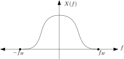
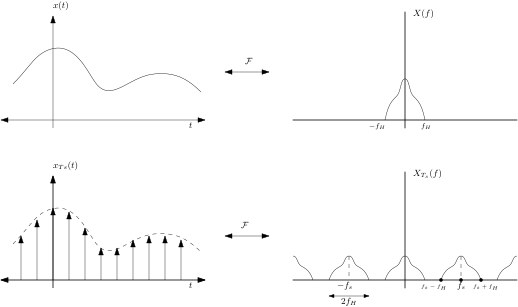
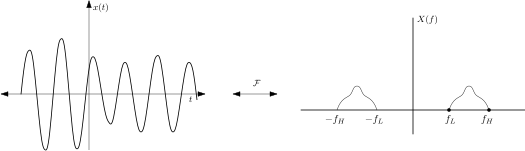
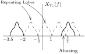

Sampling Theorem for Bandpass Signals
Table of Contents
What is sampling theorem?
The Sampling Theorem, also known as the Nyquist-Shannon Sampling Theorem, is a fundamental concept in signal processing and digital signal theory. It provides guidelines on how to accurately represent a continuous-time signal in a discrete form. The Sampling Theorem states that in order to accurately reconstruct a continuous-time signal from its samples, the sampling frequency must be at least twice the maximum frequency present in the signal.
Baseband signals
Baseband signals refer to signals that occupy a range of frequencies close to zero hertz (Hz). In other words, these signals have a frequency spectrum that starts from zero and extends up to a certain maximum frequency. Spectrum of a typical baseband signal look as follows:

Figure 1: Typical spectrum of a baseband signal.
The baseband signals don't have frequency components beyond a certain frequency, denoted here by \(f_{H}\). So for a baseband signal \(x(t)\), whose fourier transform is \(X(f)\), we say that \(x(t)\) is bandlimited to frequency \(f_{H}\) if \[ X(f) = 0 \mbox{ for } |f| > f_{H} \]
Sampling theorem for baseband signals
Say the signal \(x(t)\) is sampled at frequency \(f_{s}\), then according to sampling theorem its spectrum will repeat after every \(f_{s}\) Hz.

Figure 2: Sampling a baseband signal. Sampling a baseband signal at \(f_s\), causes repetition of the main lobe of the fourier transform to repeat after every \(f_s\) Hz in frequency domain.
In the figure above, we can see that for a bandlimited signal \(x(t)\) with fourier transform \(X(f)\), its sampled version is \(x_{T_s}(t)\) and the fourier transform of the sampled version is \(X_{T_s}(f)\) which is equal to \[ X_{T_{s}}(f) = C \sum_{k = -\infty}^{\infty} X(f - k f_{s}) \] for some scale factor \(C\) (with proper derivation, \(C = 1 / T_{s}\)). It is clear from the spectrum of \(x_{T_s}(t)\) that the sampling frequency \(f_{s}\) should be more than \(2f_{H}\) otherwise, two consecutive repetetions of the \(X(f)\) will overlap. This is known as aliasing. For baseband signals, the bandwidth, \(W\), of the signal is equal to the maximum frequency component \(f_{H}\), so the sampling frequency is \(f_{s} = 2W\).
Bandpass signals: Problem with sampling at \(2W\)
Now consider a bandpass signal, whose fourier transform is non-zero only between \(f_{L}\) and \(f_{H}\). So, the bandwidth is \(W = f_{H} - f_{L}\). A typical bandpass signal spectrum looks like as follows:

Figure 3: Typical spectrum of a bandpass signal.
It is easy to see that this signal cannot be sampled at \(2W\). Consider the case when \(f_L = 2 Hz\) and \(f_H = 3.5 Hz\) making \(W = 1.5 Hz\). Now, If this signal is sampled at \(3Hz\), then we will have aliasing. To see the aliasing, just repeat the lobe in negative frequency range, and it will overlap with the main lobe in positive frequency side (see the next figure).

Figure 4: Sampling bandpass signals at \(2W\) will cause aliasing.
One way to avoid this aliasing is to sample the signal at \(2f_{H}\), but this will be pretty wasteful of the bandwidth, and we will need very high number of samples to represent \(x(t)\). The question is can be do better than \(2f_{H}\).
Sampling theorem for Bandpass signals
Let, the signal \(x(t)\) be sampled at every \(T_{s}\) seconds. The samples are such that some \(n^{th}\) repetition of negative frequency lobe stops before frequency \(f_{L}\) and the \({n+1}^{th}\) frequency lobe starts after \(f_{H}\) as shown in the figure below:
Figure 5: Sampling bandpass signal such that \(n^{th}\) and \({(n+1)}^{th}\) repetetion of -ve frequency lobe doesn't alias with the positive frequency lobe.
This implies \[ -f_{L} + nf_{s} \leq f_{L} \implies nf_{s} \leq 2f_{L} \] and \[ -f_{H} + (n+1) f_{s} \geq f_{H} \implies (n+1) f_{s} \geq 2 f_{H} \] Dividing first equation from second, we will get: \[ \frac{n+1}{n} \geq \frac{f_{H}}{f_{L}} \implies n \leq \frac{f_{L}}{f_{H} - f_{L}} = \frac{f_{L}}{W}. \] To get the lowest sampling frequency, we have to maximize \(n\). From the above equation, we can see that \(n_{max} = \lfloor \frac{f_{L}}{W} \rfloor\). Substituting this value in \((n+1)f_{s} \leq 2f_{H}\) we get \[ f_{s,min} = \frac{2 f_{H}}{n_{max} + 1} = \frac{2f_{H}}{ \lfloor \frac{f_{L}}{W} + 1 \rfloor} = \frac{2f_{H}}{\lfloor f_{H} / W \rfloor} \] Which is the minimum sampling frequency for a bandpass signal.
We can even generalize this result to baseband signals. For baseband signals, \(f_{H} = W\) so \({\lfloor f_{H} / W \rfloor} = 1\) and thus we retrieve the sampling theorem.